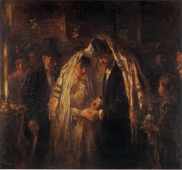

Gittin 81 - Change of Mind about the Get
If one wrote a Get for his wife, and then changed his mind before delivering the Get, Beit Shammai say that she is somewhat like a divorcee and can not later marry a Kohen.
However, Beit Hillel say that even if he gave her a Get conditionally and the condition was never met, she can still marry a Kohen if her husband dies."